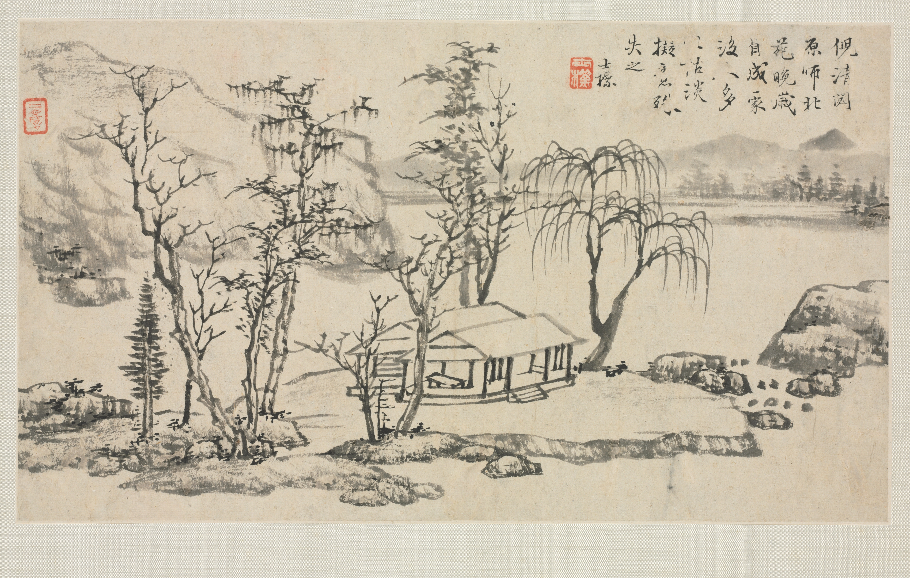
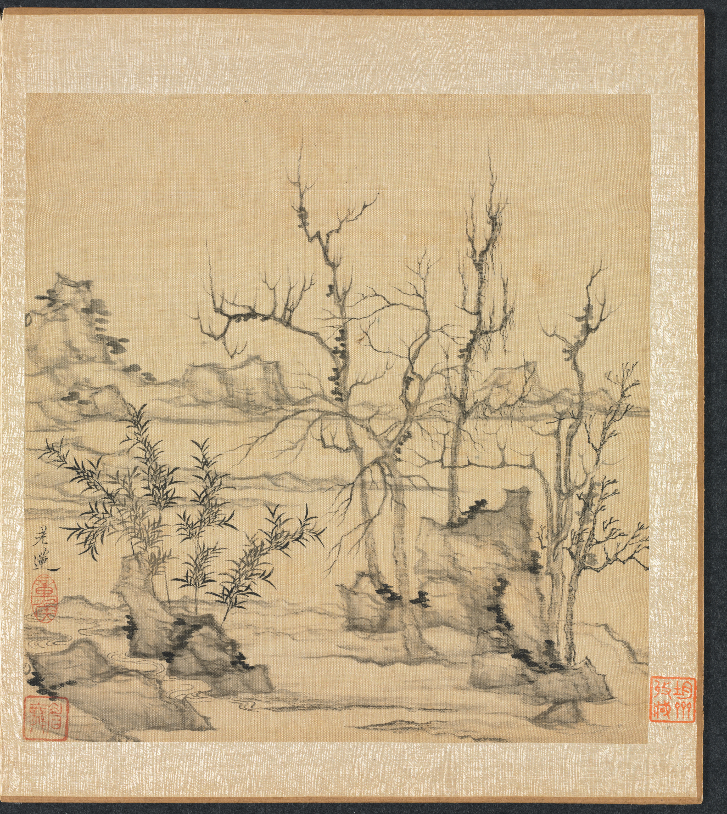
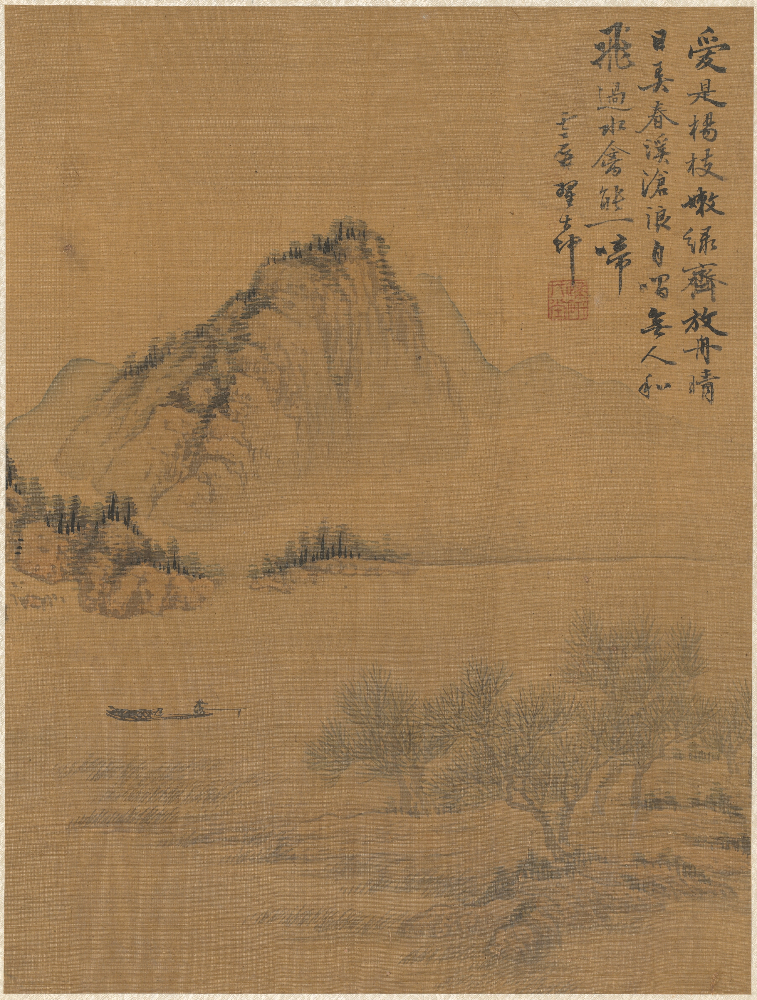
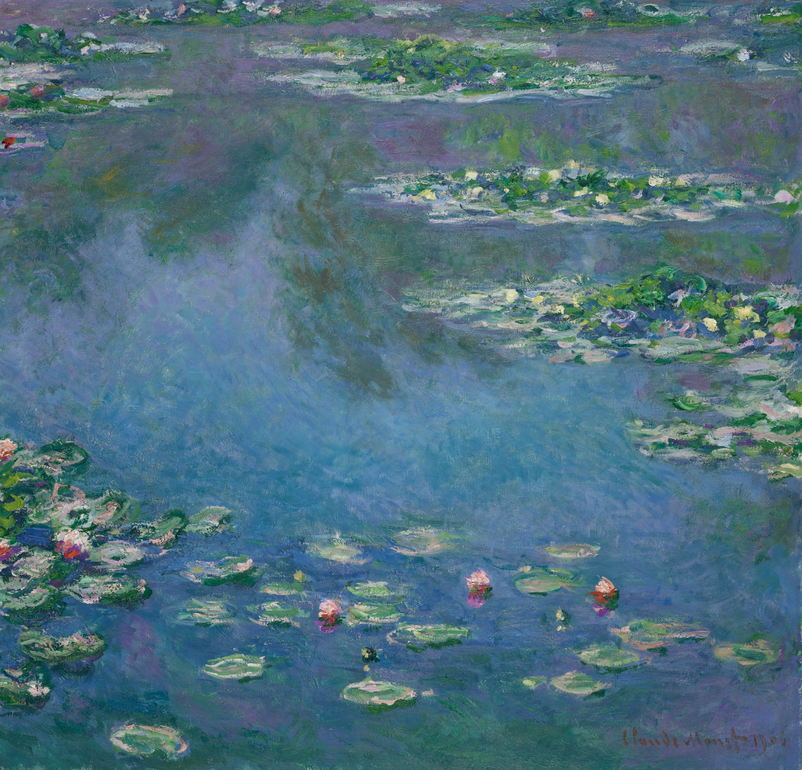
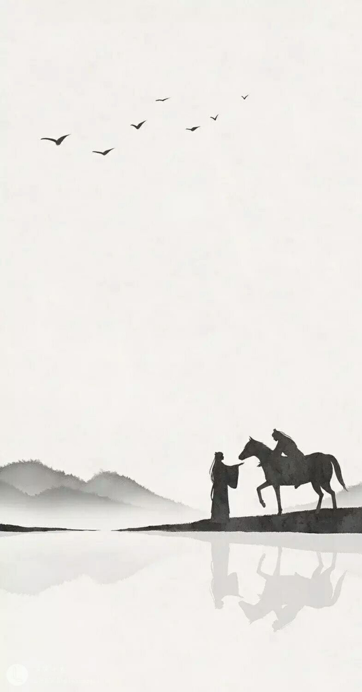

卤猫
Oamul Lu
优先查看中国园林与四季系列自然和季节是他常画的主题。作者的代理页面介绍他主要在纸张和画布上作画，也尝试动画等媒介；色彩柔和，保留一种亲近生活的手工感。
我会优先从《中国园林》找水岸、庭院和植物，从《Travelling Through the Seasons》找四季变化。选择主体小、天空或水面开阔的画，作为清新画境的参考。
从画家自己的作品里寻找山水、四季与留白。背景保留真实的笔触、原有的色光和个人气质，让交谈自然落在画中。
这里先列当代插画师的选图方向，再记录界面中已有的水墨古画与油画来源。
自然和季节是他常画的主题。作者的代理页面介绍他主要在纸张和画布上作画，也尝试动画等媒介；色彩柔和，保留一种亲近生活的手工感。
我会优先从《中国园林》找水岸、庭院和植物，从《Travelling Through the Seasons》找四季变化。选择主体小、天空或水面开阔的画，作为清新画境的参考。
她在官方介绍中说明作品以传统墨和水彩绘制。水彩的渗透、纸张的颗粒和透明层次都能保留下来，适合清淡的水面与冬日气氛。
优先查看《Striding the Waters》和《Ice Over the Sea》，挑选水域、雪景与远景占比高的作品。画境本身已有故事，聊天浮层可以保持安静。
这三位当代作者目前作为选图参考，作品未下载或嵌入界面。正式使用前确认作者授权；购买印刷品本身不代表取得软件背景使用权。
以下是已用于界面的独立画境备选。它们保留各自的绘画语言，可与当代插画参考分别查看。

横向水面与淡淡远山之间，有天然的留白；适合桌面纸墨画境。
克利夫兰美术馆作品原页藏品号 1955.37.1 · 图片 CC0

树与岸线纤细，远山疏淡，画面空阔；适合阅读时间较长的画境。
克利夫兰美术馆作品原页藏品号 1979.27.1.10 · 图片 CC0

枯树、江雾与一叶小舟；竖向构图适合手机上的山水画境。
克利夫兰美术馆作品原页藏品号 1986.49.2 · 图片 CC0

柔和水色与浮动的光，作为单独的印象派画境，保留原画的笔触。
芝加哥艺术博物馆作品原页作品编号 16568 · 公共领域图片

深蓝夜色与金色倒影，适合夜间画境；图层沿用作品的原有色光。
Wikimedia Commons 来源与许可原作藏于奥赛博物馆 · 公共领域图片

原图中的大留白、雾山、旅人、马匹和倒影，是当前山水通讯视觉方向的直接依据。
图片作者尚未核实，因此不署推测的作者名，也不标记为原创或公版。现阶段用于本地界面参考。
克利夫兰美术馆的开放图片政策可见CC0 开放许可说明。
设计阶段曾评估汉仪瘦金书简 3.53，字库来自汉仪官网页面公开的 TTF 文件。简体版保持输入内容的简体字形；字体未经过拉伸、描画或 AI 生成。
设置中可选择瘦金、柳公权体、毛体、颜体、欧体、赵体、楷体、行楷和隶书。已载入的书体显示真实预览，缺少字库的选项明确提示；也可自行导入字体文件或绑定本机字体，并调整应用范围、字号和行距。
安装版未内置该评估字库；瘦金体可以通过已安装字库或自行导入字库使用。缺少字库时会明确显示当前回退字体。公开文件地址不等于软件嵌入许可，字库使用须符合汉仪许可说明。